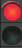

IWGI Gesture & Speech
Map
Support
Speech
Left hand

Right hand
Name:
Description :
Submit
Clear
Close
Name:
Description :
Main road
Suggested road
Submit
Clear
Close
Add new comment
Citizen Name:
User Comment :
Submit
Clear
Close
Recent Projects
Name
Description
Move to
Restart speech recognition
Recognized speech input:
Zooming
zoom in / out
Panning
up, down, left, right
User's location
where am I / don't show where i am
Initial view
go home
Measurement tool
start / stop measurement
Minimap
enable / disable minimap
Draw features
point / line
Change baselayer
read the corresponding label
Sidebar controls
read the corresponding label